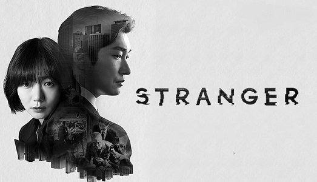

#1
Eleito um dos melhores programas da tv coreana de 2017, Stranger é um K-Drama incrivel, do gênero policial, com a participação do lindo Cho Seung-woo que faz o personagem Hwang Shi-mok, um promotor frio e nada empático e da bela Doona Bae que faz a personagem Han Yeo-jin, uma policial destemida e corajosa, na trama os dois formam uma dupla com o objetivo de capturar um assassino em série mas acabam tendo que lidar com um problema tão complicado quanto, a corrupção que cerca o ambiente de trabalho deles. O dorama conta com um elenco incrivel. A série foi um sucesso enorme entre os telespectadores nacionais, internacionais e atualmente conta com 2 temporadas. hoje o dorama pode ser assistido pela plataforma "netflix".